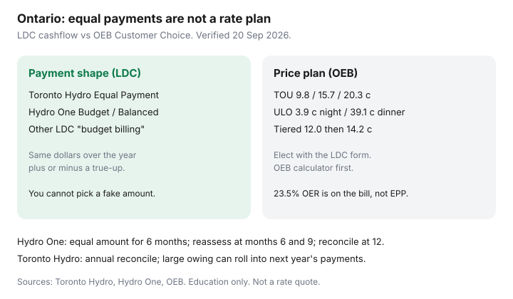

Utilities · Ontario
Ontario Budget/Equal Payment Plans for Electricity: Enrolment, Reviews, and Gotchas
Ontario customers enrol in “budget billing” because they want a cheaper hydro rate, then discover they bought a flatter Visa debit. Equal payments do not elect Time-of-Use, Tiered, or Ultra-Low Overnight. That is a separate OEB Customer Choice form. Confusing the two is how a household “goes on the cheap plan” and still pays 39.1 ¢ from 4–9 p.m. if they actually chose ULO.
This is LDC payment-plan mechanics. For the clock, use the OEB bill calculator and TOU vs Tiered vs ULO. For the national cashflow story, see equal billing.
Key takeaways
- Names differ: Toronto Hydro Equal Payment Plan, Hydro One Budget Billing (also marketed as Balanced Billing), plus other LDC “budget” or “equalized” products. All estimate and divide. None is a ¢ discount.
- Toronto Hydro (used 20 Sep 2026): account must be paid in full; annual reconciliation; over/under applied to the next bill; if you owe about an average month or more, they can recover it over the following year’s payments.
- Hydro One: amount from billing history; equal amount for six months; reassessed at months 6 and 9; reconciled after 12 months; auto-renews. You cannot pick a fake monthly number.
- Cancelling mid-plan can make the balance due on the next bill. Request a review after a renovation, EV, or new heat pump instead of rage-cancelling in January.
- Pair the flat debit with TOU/ULO/Tiered choice and a quarterly usage check. The installment does not tell you whether dinner-hour kWh are expensive.
Which LDCs offer equalized payments and under what names
Every licensed Ontario electricity distributor has some flavour of equalized or budget payments. The brand on the envelope changes. The idea does not.
| Utility | Product name | Review / reconcile |
|---|---|---|
| Toronto Hydro | Equal Payment Plan (EPP) | Estimate annual cost ÷ 12; reconcile once a year; large owing can roll into next year’s installments |
| Hydro One | Budget Billing / Balanced Billing | History-based amount for 6 months; reassess at 6 and 9; reconcile at 12; auto-renew |
| Other LDCs (Alectra, Hydro Ottawa, and others) | Budget billing, equalized payments, similar | Same estimate-and-divide pattern; read that LDC’s page before you enrol |
| Enbridge Gas (not an LDC hydro bill) | EMPP | Gas-only cashflow — see the Enbridge spike guide. Do not mix it with hydro EPP. |
Hydro One’s FAQ is explicit: residential, seasonal, and general-service energy-billed customers can enrol; unmetered and demand-billed cannot; retailer-commodity customers who are still billed by Hydro One can enrol. Seasonal accounts on Budget Billing move to monthly bills instead of quarterly.

How estimates use your history and what new movers get
The estimate is last year’s kWh at the address × the rates they expect, divided by 12 (or a mid-year reset). If you just moved, you inherit the previous occupant’s heat, kids, and work-from-home kettle — or a neighbourhood stand-in. A wrong first installment is normal. It is also how August arrives with a number that does not match your life.
Hydro One says you cannot pick the amount you want to pay. An artificial low number would just manufacture a reconciliation bill. Online self-serve may let you increase the amount; decreases go through a plan review.
Mid-year adjustments when rates or weather shift
OEB RPP commodity prices in force 1 Nov 2025–31 Oct 2026 are TOU 9.8 / 15.7 / 20.3 ¢/kWh, ULO overnight 3.9 ¢ and weekday 4–9 p.m. 39.1 ¢, Tiered 12.0 ¢ then 14.2 ¢ after 600 kWh (summer) or 1,000 kWh (winter), plus the 23.5% Ontario Electricity Rebate on the eligible base. Delivery is extra. A plan change or a polar winter moves actual charges; the installment lags until the LDC’s review clock.
Hydro One reassesses at months 6 and 9 so you are not wildly over or under. Toronto Hydro leans on the annual reconcile and can spread a large shortfall into the next year. If you added an EV, a heat pump, or a basement suite, do not wait for their clock — request a review in the portal.
Cancelling mid-plan: balances that become due
Hydro One: cancel in myAccount and the plan reconciles; you are billed the owing or credited the overpayment. Toronto Hydro: under- or overpayment hits the next bill; a large owing can instead be recovered across the following year’s EPP if you stay on the plan. Cancelling in January can put winter actuals and any shortfall on one statement.
Read the plan balance line before you toggle. A review is often smarter than a cancel if you still want smoothing.
Pairing with TOU/ULO choice so you still optimize commodity
Enrolment in EPP does not file a Customer Choice election. Run the OEB calculator with winter and summer usage, then file the LDC form if the dollars move. ULO’s 3.9 ¢ overnight is a gift to a night-shifting EV and a trap for a 5:30 p.m. oven-plus-baseboard family. The equal debit will hide that dinner-hour pile until you open interval data.
Peak Perks ($75 / $20) is a third lever — summer demand response, not a payment plan. See Peak Perks.
Sample calendar for checking usage while payments stay flat
- Every bill: ignore the debit for 30 seconds. Write kWh for the period and the number of days (Toronto Hydro notes cycles of about 27–33 days).
- January and July: compare this year to last year. Direction matters more than a degree-day essay.
- Month 6 and 9 (Hydro One): expect a reassessment letter or portal note. If they did not move the amount and your life changed, request a review.
- Anniversary month: read the reconcile line before you spend the “credit” you imagined.
- After a renovation, baby, EV, or heat pump: call or ticket a review the same week. Do not wait for their clock.
Equal payments are a grown-up cashflow tool. They are a terrible conservation report. Use them like a mortgage payment: known debit, separate eye on the kWh you actually bought.
Sources & date stamps
- Toronto Hydro, Ways to pay — Equal Payment Plan estimate, annual reconcile, roll-forward of large owing; account must be paid in full (used 20 Sep 2026).
- Toronto Hydro, Understanding high bills — EPP annual reconciliation as a cause of a one-time high bill.
- Hydro One, Budget Billing / Balanced Billing — 6-month amount, month 6 and 9 reassess, 12-month reconcile, auto-renew; cannot pick a custom amount (used 20 Sep 2026).
- OEB RPP prices 1 Nov 2025–31 Oct 2026 and 23.5% OER — commodity clocks are a different lever than budget billing.
Frequently asked questions
Is budget billing a cheaper Ontario hydro rate?
No. It is a payment shape. TOU, Tiered, and ULO are the OEB price-plan choice. Enrol in both conversations separately.
Can I choose how much I pay each month?
Hydro One says no — an artificial amount manufactures a true-up. You can request a review if your household changed. Some portals allow an increase only.
What happens if I cancel in winter?
The plan usually reconciles now. Winter actuals plus any shortfall can land on the next bill. Read the balance first.
I just moved. Should I enrol?
Usually wait until you have a season of your own kWh, or enrol knowing the estimate is the previous occupant’s house. Request a review after the first winter.
Does EPP include the Ontario Electricity Rebate?
The 23.5% OER is a bill credit on eligible charges, not a feature of EPP. Your installment should reflect the billed total the LDC estimated — confirm on your own PDF.